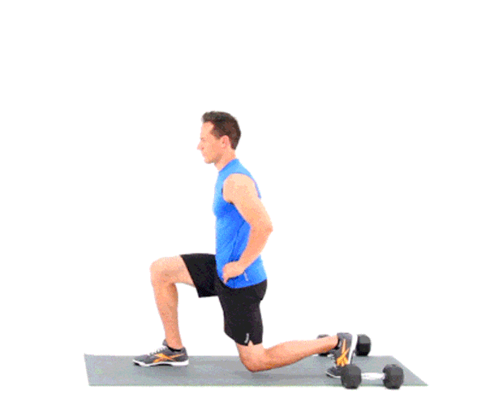
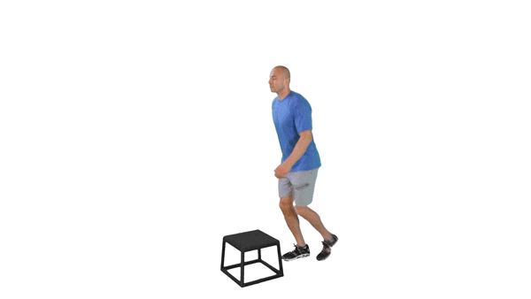
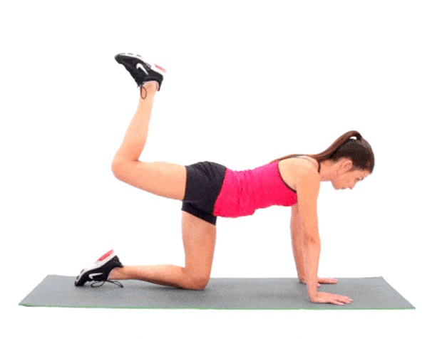

¡Tu nivel actual es Difícil..!!! por lo que te recomendamos hacer 15 repeticiones de 7 series.
Poner las manos en la cintura, da un paso largo hacia adelante hasta que la rodilla de la pierna trasera tenga contacto con el suelo. Vuelve a la posición inicial e intercambia el pie que avanzas.

¡Tu nivel actual es Difícil..!!! por lo que te recomendamos hacer 15 repeticiones de 7 series.
Para este ejercicio necesitaremos un escalón (puede ser una escalera, un cajón, una silla o un banco). Sólo debes subir y bajar el escalón alternando las piernas manteniendo la postura recta y la pierna de apoyo en la silla debe colocarse a 90 grados, sin que la rodilla sobrepase la punta del pie.

¡Tu nivel actual es Difícil..!!! por lo que te recomendamos hacer 15 repeticiones de 7 series.
La posición inicial es en cuadrupedia, con rodillas y manos apoyadas en el suelo. Coloca las manos abiertas a la anchura de los hombros y las rodillas rectas, justo debajo de las caderas. Empieza primero con una pierna, manteniendo la rodilla doblada a 90 grados y elevando la pierna hasta que esté al nivel de la cadera y después baja la rodilla hasta llegar casi al suelo.